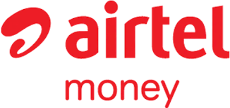
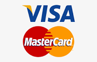

La premiere plateforme de bilan carbone certifie pour les entreprises au Gabon, en Afrique et dans le monde
Ce document presente CarbonTrack, la premiere plateforme digitale de bilan carbone et de certification environnementale concue pour le marche gabonais, africain et international. Destine aux investisseurs, partenaires strategiques et decideurs institutionnels.
SECTION 1
CarbonTrack est une plateforme SaaS innovante qui permet aux entreprises gabonaises, africaines et internationales de mesurer, analyser et certifier leurs emissions de gaz a effet de serre conformement aux normes ISO 14064 et GHG Protocol.
Bilan carbone complet en quelques heures au lieu de plusieurs semaines avec les methodes traditionnelles.
Certification par experts accredites avec visite sur site, audit des donnees et certificat officiel.
Conformite totale ISO 14064-1, ISO 14069 et GHG Protocol, reconnus mondialement.
Tarification adaptee au marche africain, paiement Airtel Money et Visa. Sans engagement.
Democratiser l'acces au bilan carbone au Gabon, en Afrique et dans le monde, et accompagner les entreprises dans leur transition ecologique, tout en respectant les plus hauts standards internationaux.
SECTION 2
Le changement climatique est l'un des defis les plus pressants de notre epoque. L'Accord de Paris (2015) engage les nations a limiter le rechauffement a 1,5°C. Pour y parvenir, chaque entreprise doit connaitre et reduire son empreinte carbone.
SECTION 3
CarbonTrack est une application web moderne qui guide les entreprises dans la realisation complete de leur bilan carbone, de la collecte des donnees a la certification officielle.
| Module | Description | Fonctionnalites Cles |
|---|---|---|
| 🏢 Sites & Entites | Gestion multi-sites | Type, adresse, surface m², description |
| 📊 Bilans Carbone | Saisie et calcul des emissions | Scope 1/2/3, 200+ facteurs, mensuel/annuel |
| 📈 Rapports & Graphiques | Visualisation et analyse | Graphiques interactifs, export PDF, QR code |
| 🏅 Certification | Certification par experts | Demande, suivi, audit, certificat officiel |
| 📎 Documents d'Audit | Pieces justificatives | Upload, stockage securise, tracabilite |
| 💳 Abonnement | Paiement et gestion | Airtel Money, Visa, facturation mensuelle |
| Scope | Description | Exemples |
|---|---|---|
| Scope 1 | Emissions directes | Combustion de carburants, gaz refrigerants, vehicules |
| Scope 2 | Emissions indirectes energie | Electricite achetee, vapeur, chauffage |
| Scope 3 | Autres emissions indirectes | Achats, fret, transport, dechets, immobilisations |
SECTION 4
Combustibles stationnaires, organiques, mobiles — Diesel, essence, GPL, bois, charbon, gaz naturel
Electricite par pays/region, vapeur, refroidissement, gaz refrigerants (R-134a, R-410A)
Metaux (acier, aluminium, cuivre), plastiques (PET, HDPE), papier, verre, ciment
Fret routier, ferroviaire, maritime, aerien — Transport personnes : voiture, bus, avion
Decharge, incineration, recyclage, compostage, eaux usees
Batiments, vehicules, equipements informatiques, mobilier, machines industrielles
Base de donnees validee provenant de sources reconnues (ADEME, DEFRA, GHG Protocol) avec composantes amont et combustion.
SECTION 4 (suite)
Le module de rapports offre une visualisation complete et interactive des resultats du bilan carbone avec 4 onglets dedies.
Graphique donut avec legende detaillee, barres de progression et pourcentages pour chaque scope
Barres horizontales montrant la contribution de chaque categorie (Energie, Fret, Intrants, etc.)
Barres empilees par mois (Scope 1+2+3), courbe cumulative, tableau detail mensuel
Classement des 15 principales sources avec code couleur par scope et valeurs detaillees
| Onglet | Contenu |
|---|---|
| Vue d'ensemble | Repartition par scope, emissions par categorie, top emetteurs, sous-categories |
| Suivi mensuel | Barres empilees mensuelles, courbe cumulative, comparaison annuelle |
| GHG Protocol | Detail par categorie GHG (1- Directes, 2- Electricite, 3-1 a 3-6) |
| ISO 14064/14069 | Classification par postes ISO avec scope, nombre de postes et part relative |
Page de couverture, synthese, tableaux par scope, graphiques, donnees de calcul, methodologie, QR code de verification
En-tetes/pieds de page, couleurs par scope, alternance de lignes, sections titrees avec separateurs
SECTION 5
La certification est l'element differenciateur majeur de CarbonTrack. Elle apporte credibilite et confiance aux rapports d'emissions.
L'entreprise soumet une demande depuis la page du bilan avec message optionnel. Statut : En attente
L'equipe CarbonTrack assigne un expert accredite. L'entreprise est notifiee. Statut : Assigne
L'expert verifie les donnees, visite le site, controle les documents. Statut : En cours
Certification approuvee avec certificat officiel, ou rejet motive. Statut : Certifie ou Refuse
| Element | Description |
|---|---|
| Numero de certificat | Reference unique du certificat |
| Nom de l'expert | Identite de l'auditeur accredite |
| Date d'inspection | Date de la visite sur site |
| Notes d'inspection | Observations detaillees de l'expert |
| Documents certifies | Rapport d'audit, certificat officiel |
| Badge de certification | Affiche sur le bilan dans la plateforme |
Un bilan certifie donne a l'entreprise une credibilite renforcee aupres des investisseurs, partenaires commerciaux et organismes de regulation. C'est un atout competitif majeur dans le contexte des exigences ESG croissantes.
SECTION 6
Quantification et declaration des emissions au niveau des organismes. CarbonTrack structure les donnees et genere les rapports dans le format ISO requis.
Guide pratique pour l'application de l'ISO 14064-1. CarbonTrack categorise les emissions selon les postes ISO 14069.
Standard le plus utilise au monde (WRI/WBCSD). CarbonTrack structure toutes les emissions en Scope 1, 2 et 3 avec les 15 categories du Scope 3.
| Source | Organisme | Couverture |
|---|---|---|
| ADEME | Agence de la transition ecologique (France) | Base Carbone — facteurs internationaux |
| DEFRA | Dept. for Environment (UK) | GHG Conversion Factors |
| GHG Protocol | WRI / WBCSD | Emission Factor Database |
| IEA | Agence Internationale de l'Energie | Facteurs electricite par pays |
SECTION 7
| Table | Description | Relations |
|---|---|---|
| companies | Entreprises clientes | — |
| users | Utilisateurs | → companies |
| sites | Sites physiques | → companies |
| assessments | Bilans carbone | → sites |
| emission_entries | Lignes d'emission | → assessments |
| audit_documents | Pieces justificatives | → assessments |
| certification_requests | Demandes certification | → assessments, companies |
| certification_documents | Documents certification | → certification_requests |
| subscriptions | Abonnements | → companies |
SECTION 8
Abonnement Entreprise

Airtel MoneyPaiement mobile instantane. Disponible et operationnel.

Visa / MastercardPaiement par carte bancaire. Bientot disponible.
| Source | Description | Horizon |
|---|---|---|
| Plan Premium | Consulting personnalise, API access, multi-utilisateurs | 2026 T3 |
| Certification | Frais de certification par les experts (par bilan) | 2026 T3 |
| Formation | Modules de formation en ligne sur le bilan carbone | 2027 T1 |
| API | Integration avec les ERP et systemes comptables | 2027 T2 |
| Credits Carbone | Marketplace de credits carbone pour projets Gabon & Afrique | 2027 T4 |
SECTION 9
| Segment | Exemples | Motivation |
|---|---|---|
| Petrole & Mines | Total Energies, Assala Energy, Eramet | Exigences ESG |
| Telecoms | Airtel Gabon, Moov Africa | Rapports RSE obligatoires |
| Banques | BGFI Bank, UBA, Ecobank | Pression bailleurs de fonds |
| Industrie | Brasseries, cimenteries | Reduction couts energetiques |
| ONG | PNUD, Banque Mondiale | Obligation reporting carbone |
| Transport | Compagnies aeriennes | Regulations OACI/OMI |
Aucune plateforme concurrente au Gabon. Position dominante a construire.
Equipe basee au Gabon (Libreville), comprehension du marche et des reglementations locales.
10x moins cher qu'un cabinet de conseil international. Paiement mobile adapte.
Bilan + certification + rapport. Pas besoin de prestataires externes.
SECTION 10
Plateforme operationnelle : inscription, bilans, rapports, PDF, certification. Paiement Airtel Money.
Interface d'administration pour gestion des certifications, assignation des experts, suivi des audits.
Integration paiement Visa. Plan Premium avec consulting, multi-utilisateurs et API access.
Ouverture Cameroun, Congo-Brazzaville, Guinee Equatoriale, Senegal, Cote d'Ivoire. Partenariats chambres de commerce.
Modules de formation en ligne. Ouverture API pour integrations ERP et systemes comptables.
Echange de credits carbone pour projets de compensation au Gabon et en Afrique (REDD+, reforestation).
Expansion Afrique Sub-Saharienne. Application mobile. IA pour recommandations de reduction.
Devenir la reference continentale en matiere de gestion carbone et de certification environnementale pour les entreprises africaines, tout en contribuant activement a la lutte contre le changement climatique.
SECTION 11
JWT tokens, cookies HTTP-Only, hachage bcrypt avec salt. Sessions expirent apres 7 jours.
Chaque entreprise n'accede qu'a ses propres donnees. Verification company_id sur chaque requete.
Documents stockes avec nommage securise. Acces controle par authentification.
Communications HTTPS. Base PostgreSQL avec acces restreint par credentials.
SECTION 12
La plateforme de bilan carbone pour l'Afrique
www.greenleaves.ga/carbontrack
Libreville, Gabon
📧 sabine-anotho@greenleaves.ga
📱 077 52 37 17 / 065 46 16 25
📧 moctar-sidibe@greenleaves.ga
📱 077 72 44 99 / 062 95 13 17
Pret a investir dans l'avenir vert de l'Afrique ?
Contactez-nous pour une demonstration personnalisee de la plateforme CarbonTrack.